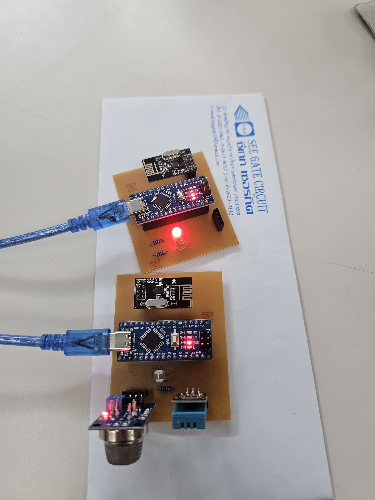
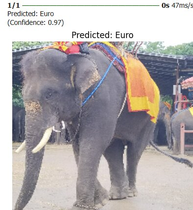
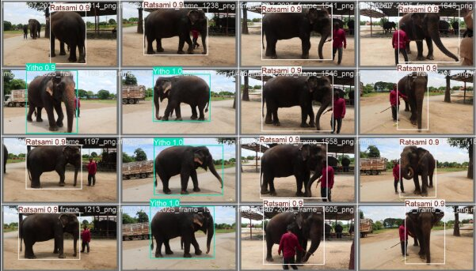
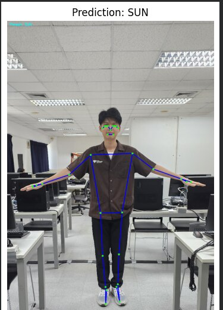

Showcase of my engineering & coding works

ออกแบบแผ่นวงจร PCB สำหรับใช้ sensors ในการตรวจจับสถานะห้องและทำการส่งข้อมูลไปที่ Microcontroller อีกตัวเพื่อแสดงสถานะขึ้นคอมพิวเตอร์

โปรแกรมสำหรับคัดแยกหน้าช้างด้วย CNN ผ่านการใช้ Object Detection เพื่อให้ง่ายต่อการคัดแยกเพิ่มมากขึ้น

โปรเจกต์ AI ตรวจจับช้างและแยกตัวตนใช้โมเดล YOLOv11 แต่เนื่องจากใช้แค่เรื่อง Object Detection ความถูกต้องเลยอยู่ที่ 23.81%

โปรเจกต์ Skeleton Extraction ใช้ความกว้างของไหล่และมาตราส่วนในการระบุคน